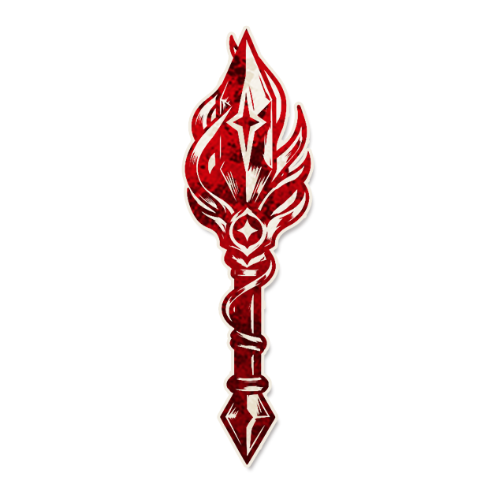

神杖之父

角色配置
- 角色类型：爪牙
你和每个恶魔角色都有一个相克规则：这给他们带来独特的增强。
以上配置来自最终 JSON 合集；以下保留原文档说明（如有）。
背景故事
“是的，就是你，是我最优秀的主人！”
角色能力
你和每个恶魔拥有一个相克规则：这给予他们独特的加强。
（可选规则：可以自定义神杖之父和恶魔的相克规则。）
角色简介
神杖之父本身没有任何能力，他对邪恶阵营的贡献取决于在场的恶魔种类。
每一个恶魔都与神杖之父拥有独特的相克规则，这会让恶魔获得最具有自身风味的加强。如果没有特殊说明，相克规则的成立需要神杖之父在场，但不需要神杖之父具有能力，当然，你可以在具体的相克规则中规定对应效果在神杖之父不在场（类似于曾经的维齐尔-侍臣相克）或离场后（类似于间谍-落难少女相克）仍然生效，或者要求仅有拥有能力的神杖之父才能触发相克规则的效果，只需要在特定的相克规则中注明，这不是什么原则上的问题，只要特定角色都在场就生效是相克规则的基本原则。
理想化地说，神杖之父给恶魔带来的加强不会多于或少于一个爪牙本身应该具有的强度。神杖之父独特的强度在于，对于善良阵营而言，只有同时确定恶魔和爪牙种类，才能确定某种邪恶“能力”是否在发挥影响，这是神杖之父本身具有的特点。因此在此之上设置的相克规则可以看起来略弱于一个常规爪牙。另外，不同的恶魔在剧本中具有可能会呈现明显的强度差别，有些恶魔可能过于弱势，但又被剧本的整体逻辑需要，这种时候使用神杖之父会是一个非常好的选择：例如，你可以只让剧本中的一部分恶魔享受到红唇女郎级别的生存能力，因为他们可能是仅仅为了剧本需要而被添加的（例如为了制造夜晚死亡的玩家也是邪恶的逻辑而被添加的亡骨魔），而另一些恶魔不会有任何生存类型的爪牙（比如在他们本身就自带换位能力的情况下），这对于剧本作者来说是非常万能且方便的。
如果玩家通过其他方式获得了神杖之父的能力，神杖之父和恶魔的相克仍然会被触发，类似于哲学家学习某个善良角色仍然会触发其相克规则（例如学习数学家仍然触发数学家-侍女相克规则）。
我们为神杖之父准备了推荐的相克规则，这会在有趣的互动中介绍。对于大部分追求极致的剧本作者，围绕剧本主题使用自定义的相克规则都会是一个更好的选择，我们也会对如何编写好的相克规则进行建议。从设计理念上来说，神杖之父能力的本质是“只会在特定角色组合存在的情况下拥有的影响”，并且，所有玩家都预先知道什么样的角色组合会带来什么样的影响，这也是为何使用相克规则来呈现这一能力：相克规则不一定触发（因为对应角色不一定在场），但是所有人都预先知道如果触发会发生什么。
如果使用自定义的相克规则，可以为他们取一个有趣的名字帮助玩家记忆：推荐的相克规则已经这么做了。
范例
神杖之父与小恶魔-新手保护：如果神杖之父曾经或现在在场，在小恶魔的首个夜晚，首个选择小恶魔的玩家会醉酒直到下个黄昏。
神杖之父与僵怖-生死逆转：如果邪恶阵营有且仅有神杖之父死亡，在游戏的第四个白天结束时，僵怖的阵营获胜。
神杖之父与普卡-欲盖弥彰：如果因为普卡中毒的玩家被处决，当晚拥有能力的神杖之父会被唤醒并选择两名玩家：他们死亡。
神杖之父与沙巴洛斯-欲戴皇冠：沙巴洛斯自行选择反刍的时机及目标。如果游戏结束时没有反刍过，沙巴洛斯的阵营落败。
神杖之父与珀-我已启动：珀因自身能力被唤醒时可以选择杀死三名玩家并阻止自己下一晚因自身能力被唤醒。
神杖之父与方古-完璧归赵：如果外来者数量与游戏开始时相同，他们不会计入邪恶阵营的获胜条件。
神杖之父与亡骨魔-魂归故里：一名镇民以为自己是外来者，直到神杖之父失去能力，神杖之父代替他行动和获得信息。
神杖之父与诺-达鲺-飞天章鱼：每局游戏限一次，在夜晚，如果神杖之父拥有能力，诺-达鲺可以查看魔典，然后可以选择与一名爪牙交换位置。
神杖之父与涡流-阴阳两隔：只有生死与神杖之父相同的玩家才会因为涡流的能力获得错误信息。
神杖之父与奥赫-过度自信：如果神杖之父拥有能力，奥赫可以选择两个角色，但只要其中有一个不在场，今晚将不会有玩家因为奥赫能力死亡。
神杖之父与暴乱-逼上梁山：在神杖之父变为暴乱时，与其相邻的一名善良玩家一同变为邪恶的暴乱。
神杖之父与堤丰之首-敌后战场：有一名爪牙是距离堤丰之首最远的玩家，而不是与邪恶玩家邻座。
神杖之父与哈迪寂亚-巴巴博一：哈迪寂亚可以选择任意名玩家。
神杖之父与军团-第七手指：如果神杖之父在剧本中，一个军团在设置调整阶段被替换为一个爪牙角色。
神杖之父与卡扎力-错误代码：如果卡扎力和神杖之父在剧本中，游戏开始前，说书人要宣布两个能力：卡扎力创造的神杖之父拥有其中之一。
神杖之父与利维坦-再许一日：如果神杖之父拥有能力，利维坦提前一天获胜。
神杖之父与痢蛭-狡兔三窟：如果神杖之父存活，痢蛭不会死亡。
神杖之父与小怪宝-恶魔奶爸：如果只有神杖之父携带过小怪宝：由他选择小怪宝杀死的玩家。
神杖之父与牙噶巴卜-自杀小队：首个念出牙噶巴卜词的爪牙会被处决。
神杖之父与混沌-屯氵昆氵：每个夜晚，如果还有与混沌邻近的镇民存活，混沌要决定混沌夜是否到来：如果这么做了，下一晚混沌不会被唤醒且神杖之父会杀死与混沌邻近的镇民之一。
神杖之父与饕餮-四象封印：所有爪牙都是神杖之父。
神杖之父与梼杌-横行霸道：梼杌被提名时可以声称自己是梼杌，如果他被处决：当晚邪恶阵营获胜。
神杖之父与姑获鸟-千变万化：神杖之父可能被当作善良阵营、任意镇民或爪牙角色。
神杖之父与阎罗-百鬼夜行：如果神杖之父拥有能力，每个黄昏所有的邪恶玩家一同被唤醒，共同查看魔典并进行秘密交流。
神杖之父与教条-天启骑士：在游戏的第四个黄昏，如果所有镇民都中毒过，邪恶阵营获胜。
神杖之父与重力-反引力子：重力可以放弃攻击变为自己选择的恶魔。
神杖之父与圣裁-颠倒乾坤：镇民第一次获得信息时，必定获得错误信息。
神杖之父与深渊-奈落之底：深渊直接获得两个爪牙能力，但是无法杀死与自己相邻的玩家。如果深渊即将获得神杖之父能力，改为获得剧本上第一个爪牙的能力（即使在场）。
神杖之父与魅影-秘氛邪霭：如果神杖之父拥有能力，与魅影邻近的善良玩家会被当作邪恶的。
运作方式
具体的相克规则有具体的运作方式，但即使是自定义的相克规则也应当被写在剧本上（除非这条相克规则规定自己是不直接公开的）
提示标记
？（方便说书人运作具体的相克规则）
规则细节
如果你需要使用自制恶魔角色，或者推荐相克规则不那么适合你的剧本（例如单刀普卡本不适合有多刀逻辑），那么自定相克规则会是你必然的选择。大部分时候，自定义一个神杖之父相克规则和设计一个爪牙能力差不多，比如不要让神杖之父的相克需要依赖其他爪牙角色生效（例如将神杖之父与小恶魔的相克设置为接刀的爪牙保留能力），因为在5-9人局中恶魔只会有一个爪牙。但是二者也有一些不同：首先，你可以设计只有某个恶魔有用的相克规则，尤其是对于那些设计特色在自身负面上或者有特殊机制的恶魔（例如，堤丰之首以外的恶魔根本不会让邪恶玩家包围恶魔，只有沙巴洛斯会不可控地复活玩家，大部分恶魔不会像小怪宝一样由说书人控刀，更极端地，只有牙噶巴卜才会有牙噶巴卜词语）；对应地，你可以设计一些其他恶魔使用会过于超模，但放在这个恶魔上恰好合适的相克规则（例如，不可能让哈迪寂亚以外的恶魔选择任意名玩家）；但同时，尽量让这个相克规则最与恶魔的能力契合，而不是所有恶魔都能辅助（例如女巫）的万金油能力。这里总结了一些常见相克规则设计模式：
1）神杖之父拥有能力时生效的相克规则：这是最好平衡的一类，神杖之父的影响需要自身存活来维持，可以配合一些直接的正面效果，例如帮普卡在平安夜补两刀，让邪恶玩家能够秘密交流并一起查看阎罗的魔典，善良玩家可以通过处决神杖之父来阻止神杖之父的能力持续生效。你可以将相克规则的效果设置为在恶魔的能力产生非常规影响时（例如普卡的平安夜）让神杖之父进行特定操作来加深与恶魔的联系；或者让恶魔拥有一个适合他的限次能力（例如给诺-达鲺换位的能力），但是如果想在最适合的时候使用要冒着神杖之父死亡的风险。
2）全局效果：对于不依赖于神杖之父状态的相克规则，最好的设计方法是让恶魔更快更强地发挥自己的能力，但是给予一个需要偿还的代价。只有全局效果适合这样设计，否则恶魔可以简单地通过杀死爪牙来避免代价。例如，沙巴洛斯可以只在自己想要复活玩家时复活玩家，但是如果一次也没有，游戏结束时他的阵营会落败。一种常见的变体是预支——让能力效果在某个动作之后的恶魔能力先产生效果再执行动作，例如混沌先开混沌夜再在下个夜晚使自己旁边的玩家死亡，珀先杀死三名玩家再停止活动一晚。
另一种适合全局效果的场景是恶魔本身具有全局效果，你可以对这些全局效果进行简单修改来产生巨大影响，例如对于圣裁而言，简单地让镇民第一次获取信息时获得错误信息，就可以将圣裁对-错的顺序扭转为错-对的顺序；再比如，如果你想为空间大盗（《惊天大案》by SUI）设计神杖之父相克规则，可以简单地修改顺逆时针方向：这些相克规则看起来简单，但其实会极大减缓善良阵营的信息整合速度，因为善良阵营要综合判断在场爪牙和恶魔种类后才能确认信息含义。另外，死亡触发的相克规则效果尽管不是全局效果，但是它会更类似于全局效果，因为邪恶阵营难以简单地移除这种效果，例如，神杖之父死亡后会让存活玩家不会因为涡流能力获得错误信息，这也可以看作全局效果配合恶魔全局效果的一个案例。
最后一种适合全局效果的场合是不方便或不需要设置为神杖之父在拥有能力时才生效，例如高暴露的恶魔哈迪寂亚设置的相克也非常暴露，很多时候，恶魔更适合一个持续暴露的能力，因为一般不需要担心恶魔死亡失去能力带来的角色暴露（因为游戏已经结束了），为了配合这一类恶魔，神杖之父与他们的相克最好设置为全局效果。另外，像小恶魔、教条这类需要爪牙离场或死亡来触发的效果最好甚至必须设置为全局效果，否则可能会在5-9人局变为白板。另外，如果神杖之父提供的只是设置调整的效果，比如在堤丰之首中的情况，也不需要要求他具有能力。
3）剧本，或不在场效果：在一些非常特殊的情况下，需要神杖之父与恶魔的相克即使神杖之父不在场也能生效：
首先，一些特殊的恶魔可能不具有爪牙，例如军团，如果你想让每个恶魔都能因为神杖之父而更具有特色，你可以设置为只要军团单方面在场就能享受神杖之父的效果，例如让一个军团变为爪牙，顺便解决军团和高暴露爪牙不兼容的问题。
其次，如果你想要通过神杖之父的相克来削弱而非加强一个有特色的恶魔，以使得这个恶魔能够出场，你需要强制这个恶魔出场就会触发与神杖之父的相克，而且最好是强制神杖之父必定与这个恶魔同时出场，否则没有神杖之父出场时邪恶配置会单方面强过有神杖之父出场的配置，这是不可接受的，关于这一点最好的例子是饕餮：饕餮无疑是一个有设计感的恶魔，但是存在两个强度上的问题：首先为了让剧本在逻辑上更完整，饕餮作为恶魔很需要多刀非恶魔角色补充多刀逻辑，然而跟这些角色尤其是多刀爪牙一起出场会使得饕餮过强；其次是为了防止7/10/13人局没有外来者可供饕餮选择，饕餮带有+1外来者能力，这尽管符合角色设计的逻辑，但是使得饕餮的强度在9/12/15人局更加崩坏了，使用神杖之父可以很好地弥补这两个问题：一方面强制全部爪牙都是神杖之父保证多刀爪牙不会和饕餮一同在场，其他恶魔可以靠多刀伪装饕餮，但是饕餮不能靠多刀爪牙进一步压缩轮次，另一方面设置外来者上限保证饕餮在不同人数对局的平衡，但如果这种效果只有在设置为剧本效果时是可能的（你问为什么这是独特的加强？因为这解决了饕餮的最大弱点不能登场）。
最后，如果你想要通过公开信息限制某种能力的强度，但是又不想直接暴露神杖之父和对应恶魔都在场，可以设置只要二者都在剧本中就会公布对应的信息，例如卡扎力相当于可以通过创造神杖之父享受其他恶魔没有的剧本外爪牙能力，但是为了限制强度，你需要提前公布一个有限大小的角色库，通过剧本效果，可以在保证限制相克效果的情况下，又不直接暴露二者是否存在。有趣的是，这种“公开的假言命题”（如果存在……那么……）其实是最有神杖之父特色的设计方式，因为这就是神杖之父要使用相克规则这一形式的原因。
4）独属于某个恶魔获胜条件：理论上这个与上述三者并不互斥，可以通过刚刚提到的三种方式实现，但是适合单独讲一讲，因为为一个恶魔设置一个独特的获胜条件会很容易建立神杖之父与恶魔的独特链接，并且增加剧本的故事感。例如，神杖之父与僵怖的相克就紧紧围绕着僵怖的处决主题：如果想要利用神杖之父的能力，僵怖不能进入假死并且要处决神杖之父。很多时候，特殊胜利效果都会给玩家巨大的成就感，而这种成就感一旦与恶魔这一剧本的主角绑定在一起，就可以帮助玩家更容易地进入剧本情景。然而，这一般来说是不容易的：因为恶魔往往是一场游戏的舞台支柱，恶魔的平稳获胜能力（杀戮或天数特胜）控制着正常游戏的节奏，将恶魔的能力绑定在困难但并非不可达成的特胜条件上很容易破坏游戏进程，因此在官方恶魔中，拥有特殊胜利条件的极少，并且设置这样的能力往往不是为了让邪恶方一开始就为了这个目标去努力，而是为了限制善良玩家的行为（例如涡流是为了阻止空过导致卖花，城镇的能力过于容易确定涡流在场，利维坦就是为了让游戏实际只会发生两次处决），需要邪恶方主动展开工作且作为角色主要能力的特胜能力则被分配给了爪牙（例如，主谋和镜像双子）。将神杖之父与恶魔的相克规则设置为独特的恶魔胜利条件能够在加深剧本主题的情况下，减少对游戏进程的破坏（就像其他特胜爪牙一样，类似于一种“支线任务”），因此单独列举在此进行推荐。
角色信息
●英文名：
●角色类型：爪牙
●角色能力类型：